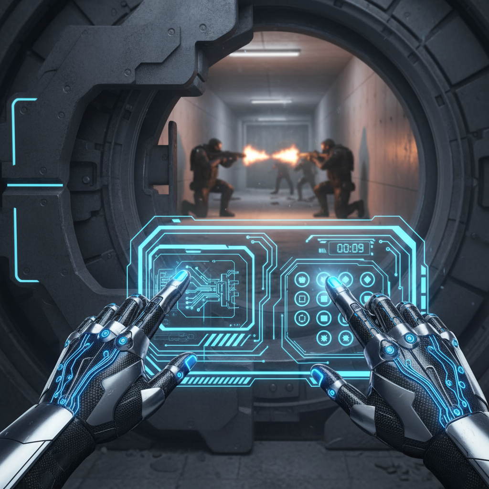

A step-by-step guide on how to successfully complete the challenging 'Data Bank Heist' mission in the popular online multiplayer game 'Cybernetic Ops'. This tutorial covers team composition, infiltration techniques, hacking mini-games, and extraction strategies.
⏱️ Estimated time: 5 minutes
From the main game lobby, invite three other players to form a four-person squad. Navigate to the 'Loadout' screen for the 'Data Bank Heist' mission. Ensure your team has a balanced composition: one 'Hacker' class to bypass electronic security, one 'Infiltrator' class with a cloaking device, and two 'Mercenary' classes for combat support. Equip EMP grenades and armor-piercing rounds.
⏱️ Estimated time: 10 minutes
Your squad will spawn on the street across from the target building. The 'Infiltrator' must use their cloaking ability to cross the street and disable the main security camera located above the entrance. Once the camera is disabled (indicated by its red light turning off), the rest of the team has a 60-second window to enter the lobby before a patrol discovers the disabled camera.
⏱️ Estimated time: 15 minutes
Proceed to the lower level to find the vault. The 'Hacker' must now interface with the vault's electronic control panel. This will initiate a puzzle-based mini-game. The Hacker needs to redirect power through a series of nodes on a grid to match a specific pattern, all while a timer counts down. The other three squad members must defend the Hacker's position from waves of NPC security guards that spawn in the area.
⏱️ Estimated time: 15 minutes
Once the vault is open, one player must enter, grab the 'Data Core' mission item, and carry it. The player carrying the core cannot use their primary weapon. The entire squad must then fight their way to the emergency elevator and ascend to the rooftop extraction point. A timer will start, and you must reach the roof before your escape vehicle leaves.